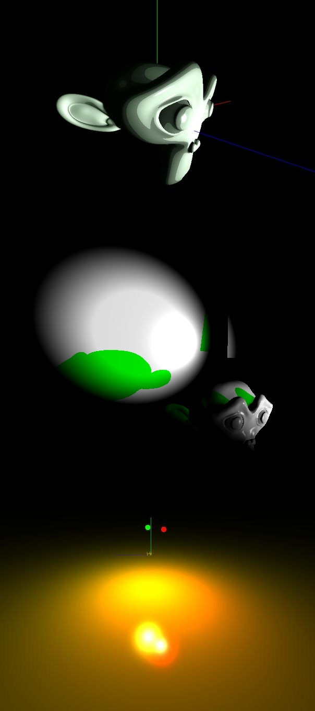
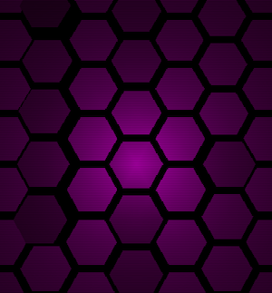
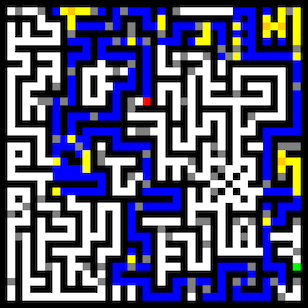
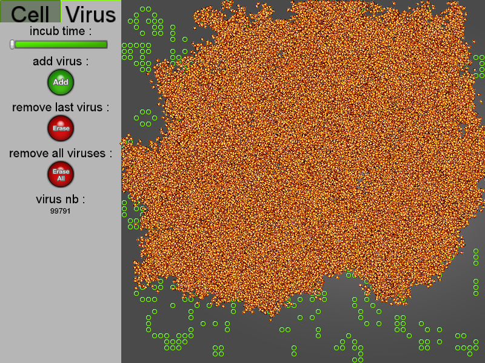
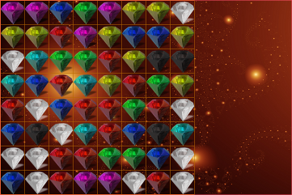
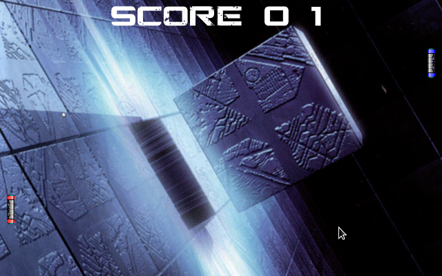

Dimitri 'skypers' Sabadie
En ce moment ...
Skyoralis
Role: fondateur/développeur (intégralité du moteur)
Skyoralis est un moteur 3D temps réel distribué sous licence GPL que je code en C++. Il utilise la technologie OpenGL, et est destiné à être utilisé dans diverses applications (animation, jeux vidéo, demoscene, etc ...)
Plateformes supportées: GNU/Linux, Mac OSX, Windows
Fonctionnalités
- gestion des vertex, tessellation evaluation/control, geometry et fragment shaders pour un total de 5 types de shader stage supportés
- gestion des programmes de shader séparables (fournit une grande flexibilité de combinaison des shaders), et facilite ainsi grandement la personnalisation du pipeline de rendu (program pipeline)
- gestion avancée des ressources partagées pour éviter la duplication de ressources et pour utiliser les ressources dans plusieurs threads
- implémentation des meshes : les meshes sont composés d'une géométrie, et de plusieurs submeshes classés par matériau, permettant de distribuer efficacement les ressources
- implémentation des matériaux : support des couleurs diffuse, spéculaire, de coefficients de brillance et hardness, ainsi que la possibilité d'appliquer un shader sur le matériau
- support de la caméra arcball, permettant de tourner autour d'un point de façon simple
- dans la même branche que les caméras, support des matrices de projection : pour l'instant seule la perspective est disponible (personnalisable selon l'angle de vue - fovy, le ratio de l'écran, le znear et le zfar)
- accompagné d'un script python pour exporter directement toutes les créations Blender dans le moteur
- fournit avec une bibliothèque mathématique d'algèbre linéaire incluant des vecteurs génériques à 2, 3 ou 4 dimensions ainsi que des matrices 4x4 en virgule flottante
- fournit quelques design patterns, comme le singleton, non_copyable, etc ...
- fournit quelques structures de données, comme des octree (arbre)
- fournit des classes utilitaires permettant, entre autre, de logger des données dans un journal, de récupérer l'heure/la date, de créer des timers, de gérer efficacement les exceptions, de correctement comparer deux nombres à virgule flottante, etc ...
- et plus encore ... !
luv
Role: fondateur/développeur
luv est un framework 3D que je développe en C++11 avec OpenGL. Il est extrait de Skyoralis et est donc par essence plus léger, mais permet une plus grande souplesse d'utilisation, et a été créé pour développer des démos en premier lieu.
Plateformes supportées: GNU/Linux, Mac OSX, Windows
Fonctionnalités
- utilise OpenGL 3.2
- gestion de 3 types de shaders stage : vertex, geometry et fragment shader
- gestion du rendu indicé par buffer et VAO, et possibilité de faire de l'hardware geometry instancing
- gestion des ressources partagées
- support des cameras
- fournit une bibliothèque d'algèbre linéaire (vecteurs, matrices, quaternions)
- fournit quelques idioms et design patterns
- fournit quelques structures de données, comme des octree (arbre)
- fournit des classes utilitaires permettant, entre autre, de logger des données dans un journal, de récupérer l'heure/la date, de créer des timers, de gérer efficacement les exceptions, de correctement comparer deux nombres à virgule flottante, etc ...
- et plus encore ... !
Demo: 01 — 0x13A
Role: fondateur/développeur
Ma première démo.
Plateformes supportées: GNU/Linux, Mac OSX, Windows
Fonctionnalités
- utilise luv.0.1
- geometry instancing, scanline, rgba distorsion, thunders field, phong, et on verra !
- WIP ! :)
Space defence
Role: cofondateur/développeur principal, je développe tout le modèle et le contrôleur du jeu
Space defence est un jeu dans la lignée des Tower defence, écrit en C++. Cependant, il se déroule dans l'espace et apporte tout un tas de nouvelles idées, rapprochant ainsi plus le jeu d'un mélange entre Tower defence et RTS.
Plateformes supportées: GNU/Linux, Mac OSX, Windows
Fonctionnalités
- implémentation du modèle du jeu en cours ...
Dans les bacs !
BattleRobot Labyrinthe
Role: développeur, j'ai développé toute la partie IA de l'applicatif. Le reste a été codé par un enseignant du département informatique de l'IUT de l'université Bordeaux 1
BattleRobot est un projet réalisé dans le cadre des projets d'Algorithmique et Programmation de S3 au département informatique de l'IUT de l'université Bordeaux 1. Nos enseignants ont codé un labyrinthe, et nous devions écrire une IA qui devait sortir du labyrinthe en vue locale. L'entrée et la sortie du labyrinthe pouvant se situer n'importe où, les seules informations disponibles pour l'IA sont les salles qui lui sont voisines. Le projet a entièrement été codé en Java et se divise en deux sous projets : le premier sous projet devait nous pousser à écrire une IA capable de sortir du labyrinthe. Le deuxième sous projet intègre des pièges qui font perdre des points de vie à l'IA ...
Plateformes supportées: toute plateforme implémentant une JVM
Fonctionnalités
- implémentation d'un graphe connexe
- implémentation d'algorithmes en DFS (Depth First Search)
- recherche de plus court chemin vers une distination inconnue dans un graphe connexe
- implémentation de règles de sélection de chemins, tri de chemins descendant, etc ...
- stratégie IA sous projet 1 : prendre le plus court chemin
- stratégie IA sous projet 2 : prendre le plus court chemin des chemins les moins piégés
- fourni avec les deux rapports de conception du projet détaillant les décisions prises
Rewrite de Game of Life (John Conway's Game of Life)
Role: développeur principal, j'ai développé les 90% de l'applicatif (à l'exception de la sauvegarde/chargement, et une partie de l'intro que je n'ai pas codée)
Game of Life est un automate cellulaire inventé par John Conway dans les années 1970. Ce projet nous a été imposé à l'IUT comme projet d'Algorithmique et Programmation C++ du deuxième semestre. Nous devions intégrer le modèle de base (i.e. les règles de survie et de mort des cellules), mais devions aussi ajouter de toutes nouvelles fonctionnalités, comme par exemple la possibilité de pouvoir changer les règles à l'aide d'une interface graphique de style Widgets (boutons, sliders, etc ...). Nous avions deux contraintes techniques : développer le jeu à l'aide de la bibliothèque multimédia SFML, et implémenter une architecture logicielle MV (MVC sans le C).
Plateformes supportées: GNU/Linux
Fonctionnalités
- une séquence d'introduction ainsi qu'une page principale apparaît à chaque lancement du programme
- modèle de John Conway implémenté, il est possible de poser des cellules en restant appuyé sur le bouton gauche de la souris, d'en supprimer en restant appuyé sur le bouton droit, de lancer la simulation
- interface graphique : l'interaction entre le joueur et la simulation se fait à l'aide de widgets; on retrouve notamment de simples boutons, des boutons cochables, des sliders, des pages, des onglets, etc ...
- possibilité de personnaliser divers traits du jeu à l'aide de l'interface graphique, comme par exemple la vitesse de la simulation, les règle du jeu, etc ...
- amélioration du modèle de base en ajoutant des virus, les virus s'attaquent aux cellules en les incubant (facteur d'incubation personnalisable via l'interface graphique); dès lors qu'une cellule est incubée, un certain nombre de virus naissent (nombre lui aussi personnalisable via l'interface graphique)
- possibilité de sauvegarder la simulation pour la reprendre plus tard
Rewrite de Bejeweled
Role: développeur principal, j'ai développé les 98% de l'applicatif ... je me suis aussi chargé de tout l'aspect visuel du jeu
Bejeweled est un jeu présentant une grille de 8x8 diamants de couleurs différentes, disposées aléatoirement. Le but du jeu et de marquer des points en alignant horizontalement ou verticalement 3 - ou plus - diamants de même couleur en échangeant deux diamants adjacents horizontalement ou verticalement. Malgré ces règles simples, le jeu est agréable à jouer, et présente tout son intérêt en augmentant la difficulté. La version proposée ici, écrite en C++ impératif, implémente évidemment le modèle de base, mais propose des fonctionnalités supplémentaires, comme la gestion d'un top 10, la personnalisation de la difficulté, ou un mode multijoueur ...
Plateformes supportées: GNU/Linux
Fonctionnalités
- menu principal, avec boutons, permettant de sélectionner le mode de jeu, les options, etc ...
- modèle de base intégralement implémenté; au menu, animation lors de l'échange de deux diamants, explosions lorsque plus de 3 diamants sont alignés, chute de diamants du haut de l'écran suite à une explosion, comptabilisation du score en fonction du nombre de diamants explosés, bonus attribués au joueur tous les N diamants, compte à rebours, indication au joueur lorsque plus aucune solution n'est possible et finalement, indication au joueur d'une solution possible si celui ci ne joue pas pendant un certain temps (il est bloqué le pauvre ... :) )
- mode coopératif : un joueur a la souris, un joueur au clavier ! ce mode dispose aussi d'une grille rectangulaire bien plus spatieuse que le mode solo
- un menu d'option permettant de paramétrer la difficulté et de changer le thème (n'a pas pu être implémenté, malheureusement ...)
Rewrite de Pong
Role: développeur principal de l'applicatif, développeur secondaire du site web, et rédacteur du site web
Premier projet du premier semestre en IUT Informatique à Bordeaux 1, nous avons du écrire un Pong, que l'on ne présente plus. Nous avions deux contraintes techniques : utiliser la SDL, et coder en C++ impératif ... Vous excuserez donc l'état des sources ! :D
Plateformes supportées: GNU/Linux
Fonctionnalités
- modèle de base implémenté, il y a une balle qui rebondit, deux jolies raquettes, et deux scores
- les deux raquettes sont déplaçables via le clavier